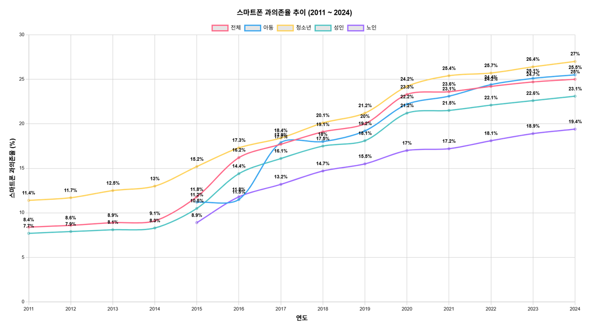

불안한 연결:
스마트폰, 너 때문에..
우리는 스마트폰으로 연결되어있지만,
더 불안해지고 있을지도 모릅니다.
스마트폰 과의존율 추이

스마트폰 오의를 줄이기도 하지만, 동시에
우리의 일상을 중독시키는 매개체가 된다.
우리는 스마트폰으로 연결되어있지만,
더 불안해지고 있을지도 모릅니다.
스마트폰 오의를 줄이기도 하지만, 동시에
우리의 일상을 중독시키는 매개체가 된다.